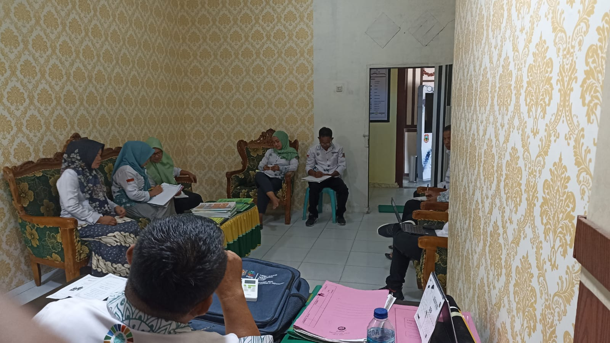
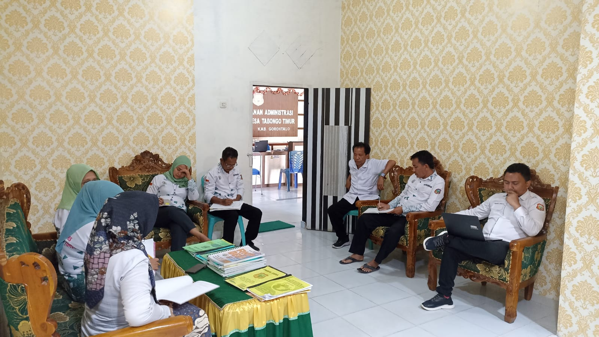
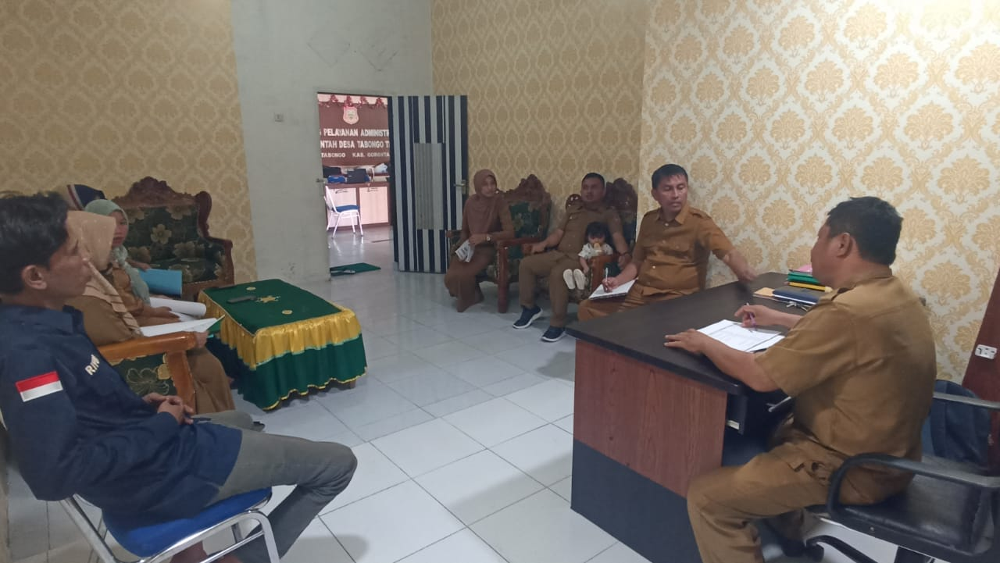
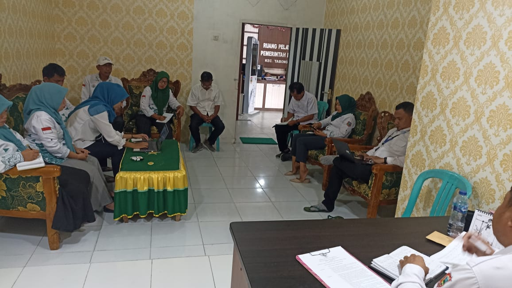

<div class="container p-0">
    <div class="row g-2 g-md-4">
        <div class="col-md-4">
            <ul class="list-group">
                <li class="list-group-item" data-bss-disabled-mobile="true" data-aos="fade-right"
                    data-aos-duration="800" style="padding-left:60px;"><span
                        class="badge rounded-pill bg-primary position-absolute"
                        style="margin:3px 0 0 -50px;">I.2.1</span><a
                        href="https://drive.google.com/drive/folders/1s7_cJppN9NltlTCZ51vGK5LGJwJWprVq?usp=drive_link"
                        target="_blank">SOTK (struktur organisasi tata kelola) Desa, tupoksi masing-masing kaur</a></li>
                <li class="list-group-item" data-bss-disabled-mobile="true" data-aos="fade-right"
                    data-aos-duration="800" data-aos-delay="100" style="padding-left:60px;"><span
                        class="badge rounded-pill bg-primary position-absolute"
                        style="margin:3px 0 0 -50px;">I.2.2</span><a
                        href="https://drive.google.com/drive/folders/1eRX3mi-5Rau5O7CitZPDBvD5tLq79NpB?usp=drive_link"
                        target="_blank">Perkades / Perdes / Keputusan Kades / SOP tentang Mekanisme Evaluasi Kinerja
                        Perangkat Desa</a></li>
                <li class="list-group-item" data-bss-disabled-mobile="true" data-aos="fade-right"
                    data-aos-duration="800" data-aos-delay="200" style="padding-left:60px;"><span
                        class="badge rounded-pill bg-primary position-absolute"
                        style="margin:3px 0 0 -50px;">I.2.3</span><a
                        href="https://drive.google.com/drive/folders/1PUMlrvJhZ79mc2qncJmvbQj7jKhKKeBY?usp=drive_link"
                        target="_blank">Undangan Penyusunan regulasi kepada seluruh aparatur desa</a></li>
                <li class="list-group-item" data-bss-disabled-mobile="true" data-aos="fade-right"
                    data-aos-duration="800" data-aos-delay="300" style="padding-left:60px;"><span
                        class="badge rounded-pill bg-primary position-absolute"
                        style="margin:3px 0 0 -50px;">I.2.4</span><a
                        href="https://drive.google.com/drive/folders/1M-_UVh1nFZ9PrfVCBYDdga1MLjszxDl7?usp=drive_link"
                        target="_blank">Notulensi </a></li>
                <li class="list-group-item" data-bss-disabled-mobile="true" data-aos="fade-right"
                    data-aos-duration="800" data-aos-delay="400" style="padding-left:60px;"><span
                        class="badge rounded-pill bg-primary position-absolute"
                        style="margin:3px 0 0 -50px;">I.2.5</span><a
                        href="https://drive.google.com/drive/folders/1u1yOzkefs-6JsqL8ithNNPL2LoFz48AG?usp=drive_link"
                        target="_blank">Daftar Hadir</a></li>
                <li class="list-group-item" data-bss-disabled-mobile="true" data-aos="fade-right"
                    data-aos-duration="800" data-aos-delay="500" style="padding-left:60px;"><span
                        class="badge rounded-pill bg-primary position-absolute"
                        style="margin:3px 0 0 -50px;">I.2.7</span><a
                        href="https://drive.google.com/drive/folders/1rxCmAWk40cCFHWOFH2Edo5q9JXLP_HEA?usp=drive_link"
                        target="_blank">Format formulir evaluasi (Tupoksi perangkat Desa, Dokumen pendukung, Kriteria
                        penilaian dan Catatan)</a></li>
            </ul>
        </div>
        <div class="col-md-8" data-bss-disabled-mobile="true" data-aos="fade-up" data-aos-duration="800">
            <div class="card">
                <div class="card-header" style="padding-left:60px;"><span
                        class="badge rounded-pill bg-primary position-absolute"
                        style="margin:3px 0 0 -50px;">I.2.6</span><a
                        href="https://drive.google.com/drive/folders/1u8Nm56NGrHSgEDk1GnGi1Mo98oMR1-Xp?usp=drive_link"
                        target="_blank">Dokumentasi Penyusunan regulasi </a></div>
                <div class="card-body p-2 p-md-4">
                    <div id="carouselExampleIndicators" class="carousel slide" data-bs-ride="carousel">
                        <div class="carousel-indicators"><button class="active" type="button"
                                data-bs-target="#carouselExampleIndicators" data-bs-slide-to="0" aria-current="true"
                                aria-label="Slide 1"></button><button type="button"
                                data-bs-target="#carouselExampleIndicators" data-bs-slide-to="1"
                                aria-label="Slide 2"></button><button type="button"
                                data-bs-target="#carouselExampleIndicators" data-bs-slide-to="2"
                                aria-label="Slide 3"></button><button type="button"
                                data-bs-target="#carouselExampleIndicators" data-bs-slide-to="3"
                                aria-label="Slide 4"></button></div>
                        <div class="carousel-inner">
                            <div class="carousel-item active"></div>
                            <div class="carousel-item"></div>
                            <div class="carousel-item"></div>
                            <div class="carousel-item"></div>
                        </div><button class="carousel-control-prev" type="button"
                            data-bs-target="#carouselExampleIndicators" data-bs-slide="prev"><span
                                class="carousel-control-prev-icon" aria-hidden="true"></span><span
                                class="visually-hidden">Previous</span></button><button class="carousel-control-next"
                            type="button" data-bs-target="#carouselExampleIndicators" data-bs-slide="next"><span
                                class="carousel-control-next-icon" aria-hidden="true"></span><span
                                class="visually-hidden">Next</span></button>
                    </div>
                </div>
            </div>
        </div>
        <div class="col-md-6 mb-auto">
            <div class="card h-100" data-bss-disabled-mobile="true" data-aos="fade-up" data-aos-duration="800">
                <div class="card-header bg-info ch1"><span class="badge rounded-pill bg-primary">I.2.8</span><a
                        href="https://drive.google.com/drive/folders/1uTlf-Up2JnZxBAarfdRZPDWzUrFRshg2?usp=drive_link"
                        target="_blank">Bukti perangkat desa paham mengenai SOTK dan mekanisme evaluasi kinerja terhadap
                        perangkat desa</a></div>
                <div class="card-body p-2 p-md-4 py-0">
                    <div class="pt-4"><iframe width="100%" height="315" src="..." title="YouTube video player"
                            frameborder="0" allowfullscreen=""></iframe></div>
                </div>
                <div class="card-footer text-center"><a href="" type="button" class="costumbutton1"><span
                            class="costumbutton1-text"><span>Lihat di Youtube</span></span><span
                            class="costumbutton1-icon"><i class="fas fa-arrow-right"></i></span></a></div>
            </div>
        </div>
        <div class="col-md-6 mb-auto">
            <div class="card h-100" data-bss-disabled-mobile="true" data-aos="fade-up" data-aos-duration="800">
                <div class="card-header bg-info ch1"><span class="badge rounded-pill bg-primary">I.2.10</span><a
                        href="https://drive.google.com/drive/folders/1XADq7c_fVfMba7DzYCrhhvJhb9eLUt_y?usp=drive_link"
                        target="_blank">Bukti Anggota BPD paham mengenai SOTK dan mekanisme evaluasi kinerja terhadap
                        perangkat desa</a></div>
                <div class="card-body p-2 p-md-4 py-0">
                    <div class="pt-4"><iframe width="100%" height="315" src="..." title="YouTube video player"
                            frameborder="0" allowfullscreen=""></iframe></div>
                </div>
                <div class="card-footer text-center"><a href="..." type="button" class="costumbutton1"><span
                            class="costumbutton1-text"><span>Lihat di Youtube</span></span><span
                            class="costumbutton1-icon"><i class="fas fa-arrow-right"></i></span></a></div>
            </div>
        </div>
        <div class="col-md-6 mb-auto">
            <div class="card h-100 shadow-sm" data-bss-disabled-mobile="true" data-aos="fade-up"
                data-aos-duration="800">
                <div class="card-header bg-info ch1"><span class="badge rounded-pill bg-primary">I.2.9</span><a
                        href="https://drive.google.com/drive/folders/1Apiflcjs8hkX1E9jSTlNt8wkNyMsGggk?usp=drive_link"
                        target="_blank">Bukti berupa foto atau screenshoot Publikasi regulasi dan mekanisme evaluasi
                        kinerja terhadap perangkat desa</a></div>
                <div class="card-body text-center p-2 p-md-4"></div>
            </div>
        </div>
    </div>
</div>